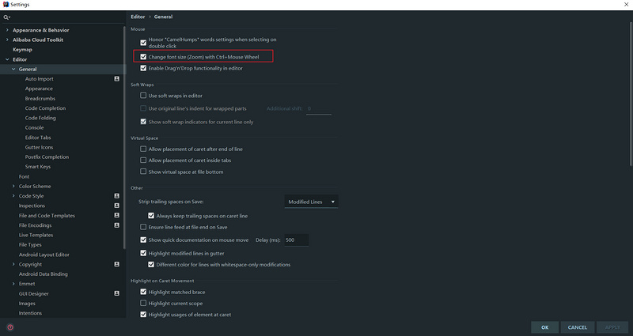

前言
工欲善其事
必先利其器
最近受部门的邀请，给入职新人统一培训IDEA，发现有很多新人虽然日常开发使用的是IDEA，但是还是很多好用的技巧没有用到，只是用到一些基本的功能，蛮浪费IDEA这个优秀的IDE。 同时，在这次分享之后，本人自己也学习到了一些新的使用技巧，所以借着这次机会，一起分享出来。希望可以帮到一些人。
基于的 IDEA 版本信息：IntelliJ IDEA 2018.2.2 (Ultimate Edition)
知识点概览：
- 高效率配置
- 日常使用 必备快捷键（★★）
- 查找
- 跳转切换
- 编码相关
- 代码阅读相关
- 版本管理相关
- 编码效率相关（★★）
- 文件代码模板
- 实时代码模板
- 其他
- 代码调试 源码阅读相关（★★★）
- 视图模式
- 代码调试
- …
- 插件方面
- 插件的安装与使用
- 插件推荐
- 参考
2019-08-09 UPDATE
[插件推荐]增加图片描述，增加插件内容。阅读更友好。
高效率配置
1. 代码提示不区分大小写
Settings -> Editor -> General -> Code Completion
(低版本 将 Case sensitive completion 设置为 None 就可以了)
2. 自动导包功能及相关优化功能
Settings -> Editor -> General -> Auto Import3. CTRL + 滑动滚轮 调整窗口显示大小
Settings -> Editor -> General -> Change font size (Zoom) with Ctrl+Mouse wheel
选择之后，就可以通过CTRL+滑动滚轮的方式，调整编辑器窗口的字体大小
4. tab 多行显示
这点因人而异，有些人喜欢直接取消所有tab，改用快捷键的方式，我屏幕比较大，所以喜欢把tab全部显示出来。
Window -> Editor Tabs -> Tabs Placement，取消勾选 Show Tabs In Single Row选项。
效果如下：
5. 代码编辑区显示行号
Settings -> Editor -> General -> Appearance `勾选 `Show Line Numbers6….
日常使用 必备快捷键（★★）
查找
| 快捷键 | 介绍 |
|---|---|
| Ctrl + F | 在当前文件进行文本查找 |
| Ctrl + R | 在当前文件进行文本替换 |
| Shift + Ctrl + F | 在项目进行文本查找 |
| Shift + Ctrl + R | 在项目进行文本替换 |
| Shift + Shift | 快速搜索 |
| Ctrl + N | 查找class |
| Ctrl + Shift + N | 查找文件 |
| Ctrl + Shift + Alt + N | 查找symbol（查找某个方法名） |
跳转切换
| 快捷键 | 介绍 |
|---|---|
| Ctrl + E | 最近文件 |
| Ctrl + Tab | 切换文件 |
| Ctrl + Alt + ←/→ | 跳转历史光标所在处 |
| Alt + ←/→ 方向键 | 切换子tab |
| Ctrl + G | go to（跳转指定行号） |
编码相关
| 快捷键 | 介绍 |
|---|---|
| Ctrl + W | 快速选中 |
| (Shift + Ctrl) + Alt + J | 快速选中同文本 |
| Ctrl + C/Ctrl + X/Ctrl + D | 快速复制或剪切 |
| 多行选中 Tab / Shift + Tab | tab |
| Ctrl + Y | 删除整行 |
| 滚轮点击变量/方法/类 | 快速进入变量/方法/类的定义处 |
| Shift + 点击Tab | 快速关闭tab |
| Ctrl + Z 、Ctrl + Shift + Z | 后悔药，撤销/取消撤销 |
| Ctrl + Shift + enter | 自动收尾，代码自动补全 |
| Alt + enter | IntelliJ IDEA 根据光标所在问题，提供快速修复选择，光标放在的位置不同提示的结果也不同 |
| Alt + ↑/↓ | 方法快速跳转 |
| F2 | 跳转到下一个高亮错误 或 警告位置 |
| Alt + Insert | 代码自动生成，如生成对象的 set / get 方法，构造函数，toString() 等 |
| Ctrl + Shift + L | 格式化代码 |
| Shift + F6 | 快速修改方法名、变量名、文件名、类名等 |
| Ctrl + F6 | 快速修改方法签名 |
代码阅读相关
| 快捷键 | 介绍 |
|---|---|
| Ctrl + P | 方法参数提示显示 |
| Ctrl + Shift + i | 就可以在当前类里再弹出一个窗口出来 |
| Alt + F7 | 可以列出变量在哪些地方被使用了 |
| 光标在子类接口名，Ctrl + u | 跳到父类接口 |
| Alt + F1 + 1， esc | |
| (Shift) + Ctrl + +/- | 代码块折叠 |
| Ctrl + Shift + ←/→ | 移动窗口分割线 |
| Ctrl + (Alt) + B | 跳转方法定义/实现 |
| Ctrl + H | 类的层级关系 |
| Ctrl + F12 | Show Members 类成员快速显示 |
版本管理相关
| 快捷键 | 介绍 |
|---|---|
| Ctrl + D | Show Diff |
| (Shift) + F7 | （上）下一处修改 |
更多快捷键请参考此文章
https://github.com/judasn/Int…
mac os 快捷键请参考本文章 https://github.com/judasn/Int…
编码效率相关（★★）
文件代码模板
Settings -> Editor -> File and Code Template在这里可以看到IDEA所有内置的文件代码模板，当你选择某个文件生成时，就会按照这里面的模板生成指定的代码文件。
另外，你可以在这里设置文件头。
设置之后，效果如下
实时代码模板
IDEA提供了强大的实时代码模板功能，并且原生内置了很多的模板，比如，当你输入sout或者psvm，就会快速自动生成System.out.println();和public static void main(String[] args) {}的代码块。
这些的模板可以在Settings -> Editor -> Live Templates 看到。使用者可以按照自己的使用习惯来熟悉相关的代码模板。
定制代码模板
IDEA也提供自己定制实时代码模板的功能。
- 创建自己的模板库
- 创建定制的代码模板
图中的MyGroup就存放着我自己定义的代码模板。
其他
CRTL+ALT+T

Ctrl + Alt + T 提供的是代码块包裹功能 - Surround With。可以快速将选中的代码块，包裹到选择的语句块中。
本地历史版本
IDEA 自带本地版本管理的功能，能够让你本地编写代码变得更加的安心和方便。

代码调试 源码阅读相关（★★★）
视图模式

IDEA提供两种特殊的视图模式，
- Presentation Mode - 演示模式，专门用于Code Review这种需要展示代码的场景
- Distraction Free Mode - 禅模式，专注于代码开发
代码调试
1. 条件断点
IDEA 可以设置指定条件的断点，增加我们调试的效率。

2. 强制返回
IDEA 可以在打断点的方法栈处，强制返回你想要的方法返回值给调用方。非常灵活！


3. 模拟异常
IDEA 可以在打断点的方法栈处，强制抛出异常给调用方。这个在调试源码的时候非常有用。

4. Evaluate Expression
IDEA 还可以在调试代码的时候，动态修改当前方法栈中变量的值，方便我们的调试。

插件方面
插件安装
File -> Setting -> Plugin插件安装，可以直接在IDEA的插件库中实时搜索安装。browse plugin repository
对于网络不好的用户，可以登录官方插件仓库地址：https://plugins.jetbrains.com…，下载压缩包之后，选择install from disk
插件推荐
本人日常开发中使用的插件
Alibaba Java Coding Guidelines
阿里Java编程规约插件
FindBugs
代码缺陷扫描


PMD
代码缺陷扫描
InnerBuilder
builder模式快速生成

lombok plugin
lombok 插件
maven helper
maven 依赖管理助手 ，解析maven pom结构，分析冲突；


Rainbow brackets
让代码中的括号更具标识性

HighlightBracketPair
自动高亮匹配代码段，和Rainbow brackets一起用爽爽的。
String Manipulation
String相关辅助简化，搭配 CTRL+W 、ALT+J等文本选择快捷键使用

Translation
翻译插件，阅读源码必备


GenerateAllSetter

Key Promoter X
对你的鼠标操作进行 快捷键提示

GenerateSerialVersionUID
Alt + Insert 快速生成SerialVersionUID

GsonFormat

RestfulToolkit
- 快速跳转到Restful Api处( use: Ctrl(Command) + or Ctrl + Alt + N )
- 展示Resultful 接口结构
- http 简单请求工具


Material Theme UI
本人自用的主题就是这个。

MyBatis Log Plugin
把 Mybatis 输出的sql日志还原成完整的sql语句，看起来更直观。
Free Mybatis
MyBatis 免费的插件
Codota
自能代码提示，谁用谁知道。